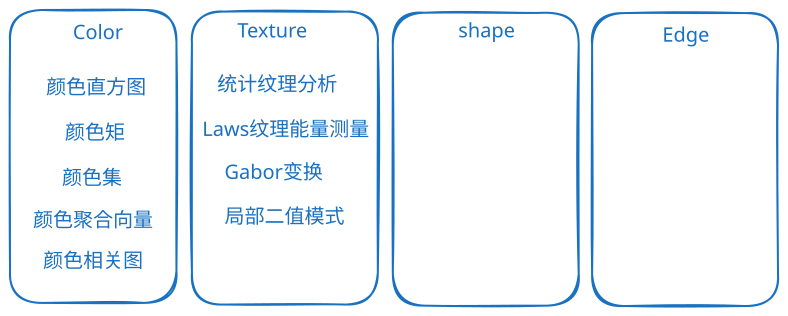
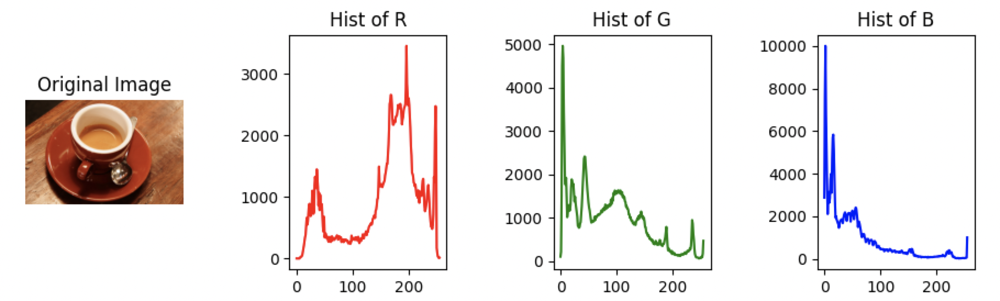
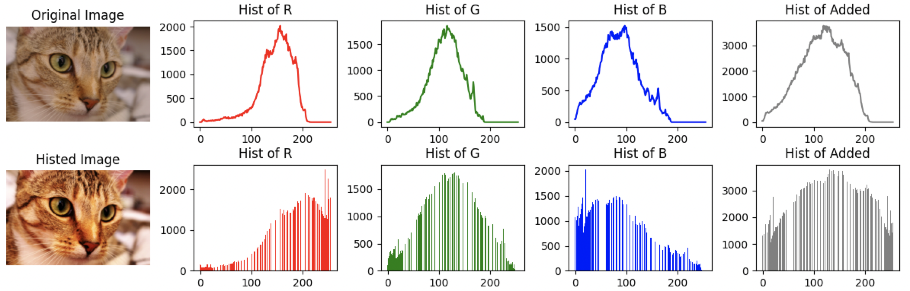
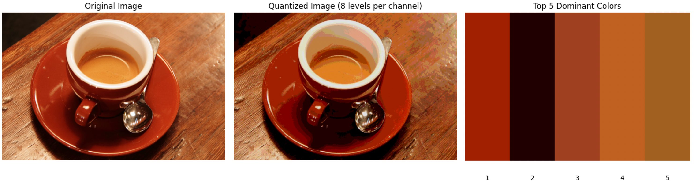
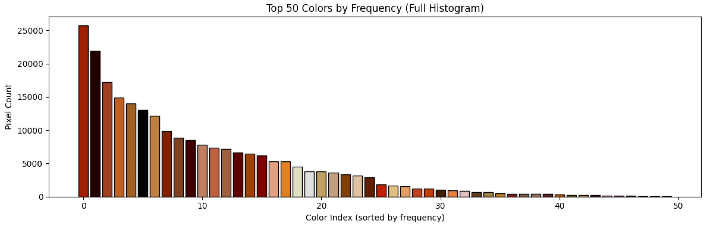
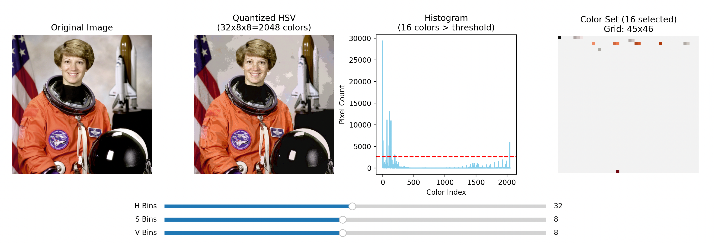
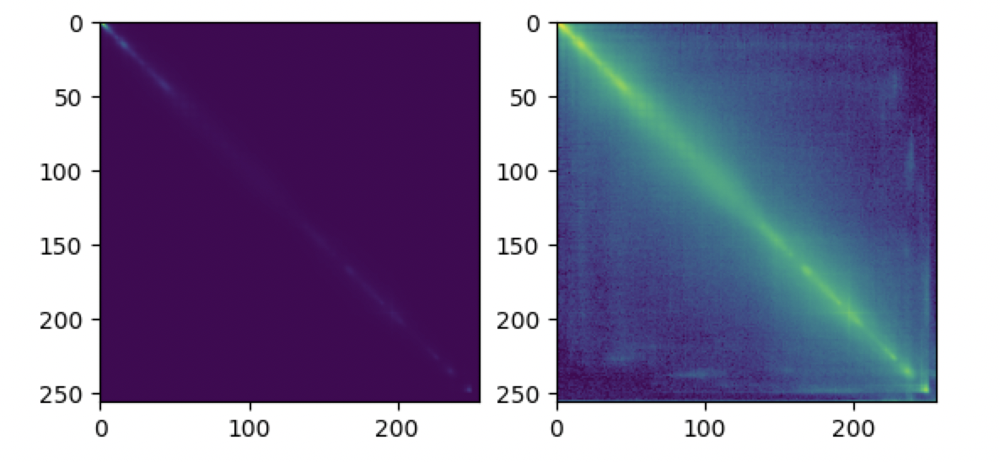
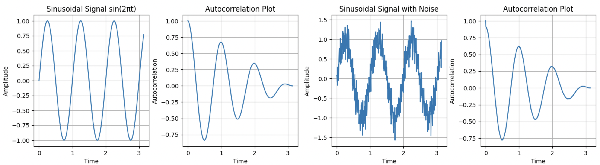
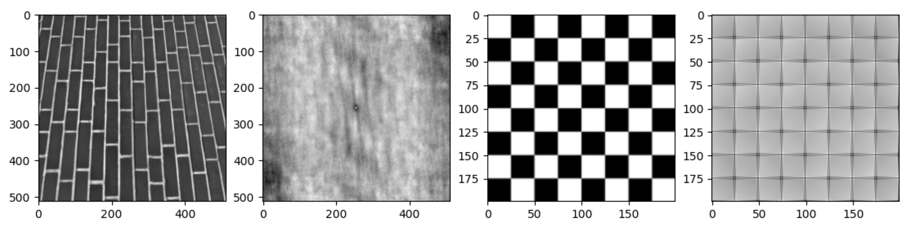

.png)
![数字图像处理—图像纹理特征[1]](../../.gitbook/assets/image (37).png) 播客中的图片[1]
播客中的图片[1]
全局累加直方图与主色调直方图在 google 都搜不到！也没有别人的代码实现，这两个特征的真实性有待考察！




$p_{ij}$表示数字图像$P$的第$i$个图像通道的第$j$个像素的像素值，$N$表示图像中像素的个数。
颜色集又可以称为颜色索引集，其是对图像颜色直方图的一种近似。 （其实我看就是对颜色直方图进行一遍筛选。）

👉 代码颜色集，是对颜色直方图的筛选。颜色聚合向量，是表示颜色间的关系，代表颜色的变化。
颜色聚合向量是在颜色直方图的基础之上做的进一步运算。其核心思想是将属于颜色直方图的每个颜色量化区间的像素分为两部分，如果该颜色量化区间中的某些像素占据的连续区域的面积大于指定阈值，则将该区域内的像素作为聚合像素，否则作为非聚合像素。
颜色聚合向量可表示为$<(α1,β1),,(αn,βn)>$，其中$αi$与$βi$分别代表颜色直方图的第i个颜色量化区间中的聚合像素和非聚合像素的数量。颜色聚合向量除了包含颜色频率信息外，也包含颜色的部分空间分布信息，因此其可以获得比颜色直方图更好的表示效果。颜色聚合向量算法的步骤如下。
1. 量化：颜色聚合向量算法的第一步与求普通的颜色直方图类似，即对图像进行量化处理。一般采用均匀量化处理方法，量化的目标是使图像中只保留有限个颜色区间。
2. 连通区域划分针对重新量化后的像素值矩阵，根据像素间的连通性把图像划分成若干个连通区域。
3. 判断聚合性统计每个连通区域中的像素数目，根据设定的阈值判断该区域中的像素是聚合的，还是非聚合，得出每个颜色区间中聚合像素和非聚合像素的数量$αi$和$βi$。
4. 聚合向量形成图像的聚合向量可以表示为$〈(α1,β1),,(αn,βn)〉$。
颜色相关图 = 颜色聚合向量 + 位置信息
颜色相关图是图像颜色分布的另外一种表达方式。颜色相关图不仅可以显示像素在图像中的占比，也可以反映不同颜色对间的空间位置的相关性。颜色相关图利用颜色对间的相对距离分布来描述空间位置信息。👉 代码
$$ \gamma_{i,j}^{(k)}=\underset{p_1\in I_{(i)}, p_2\in I}{\operatorname{P}}[p_2\in I_{(j)}\mid |p_1-p_2|=k] $$

播客中的图片[1]
.png)
![综述[2]](../../.gitbook/assets/image (38).png) 综述总结[2]
综述总结[2]
https://github.com/cgreen259/Texture-Toolbox
要理解 2D 的自相关函数还是先看看一维的自相关函数。自相关函数代表了一个信号移动一些距离，和自己是相像的程度！
下图参考了[5]，但不一样。👉 代码

接下来就是图像的自相关函数（注意下面的公式 range 是matlab 对图像的索引，所以从 1 开始，如果用 Python就要再减一）：
$$ ho(x,y)=\frac{\frac{1}{(N_i-\left|x\right|)(N_j-\left|y\right|)}\sum_{i}\sum_{j}I(i,j)I(i+x,j+y)}{\frac{1}{N_i N_j}\sum_{i=1}^{N_i}\sum_{j=1}^{N_j}I(i,j)^2} $$
| condition | range of i | range of y |
|---|---|---|
| x≥0, y≥0 | [1, Ni-x] | [1, Nj-y] |
| x≥0, y<0 | [1, Ni-x] | [1-y, Nj] |
| x<0, y≥0 | [1-x, Ni] | [1, Nj-y] |
| x<0, y<0 | [1-x, Ni] | [1-y, Nj] |

👉 代码.png)
.png)
计算梯度幅度的直方图。不同的纹理的图片对应的梯度幅度直方图比较稳定，因为取的幅度，所以不受方向影响。
.png)
.png)
[6]
论文[6]的计算方法：
该方法的本质是使用条件概率表征纹理特征。
一般采用 0,45,90,135 四个角度的方向来计算距离为 n 的灰度共生矩阵。下面是方向为0，距离 n 为 1 的案例：
.png)
.png)
一图胜千言[7]
另外灰度共生矩阵（GLDM）可以进一步计算的到很多统计量。
论文中提出了 14 种：角二阶矩（能量）、对比度、熵、相关性、均匀性、逆差矩、和平均、和方差、和熵、差方差（变异差异）、差熵、局部平稳性、相关信息测度1、相关信息测度2。
.png)
.png)
import matplotlib.pyplot as plt
from skimage.feature import graycomatrix, graycoprops
from skimage import data
PATCH_SIZE = 21
# 载入相机图像
image = data.camera()
# 选择图像中的草地区域块
grass_locations = [(474, 291), (440, 433), (466, 165), (462, 236)]
grass_patches = []
for loc in grass_locations:
grass_patches.append(image[loc[0]:loc[0] + PATCH_SIZE,
loc[1]:loc[1] + PATCH_SIZE])
# 选择图像中的天空区域块
sky_locations = [(54, 48), (21, 233), (90, 380), (18, 330)]
sky_patches = []
for loc in sky_locations:
sky_patches.append(image[loc[0]:loc[0] + PATCH_SIZE,
loc[1]:loc[1] + PATCH_SIZE])
# 计算每个块中的灰度共生矩阵属性
xs = []
ys = []
for patch in (grass_patches + sky_patches):
glcm = graycomatrix(patch, [5], [0], 256, symmetric=True, normed=True)
xs.append(graycoprops(glcm, 'dissimilarity')[0, 0])
ys.append(graycoprops(glcm, 'correlation')[0, 0])
# 创建绘图
fig = plt.figure(figsize=(8, 8))
# 展现原始图像，以及图像块的位置
ax = fig.add_subplot(3, 2, 1)
ax.imshow(image, cmap=plt.cm.gray, interpolation='nearest',
vmin=0, vmax=255)
for (y, x) in grass_locations:
ax.plot(x + PATCH_SIZE / 2, y + PATCH_SIZE / 2, 'gs')
for (y, x) in sky_locations:
ax.plot(x + PATCH_SIZE / 2, y + PATCH_SIZE / 2, 'bs')
ax.set_xlabel('Image')
ax.set_xticks([])
ax.set_yticks([])
ax.axis('image')
# 对于每个块， plot (dissimilarity, correlation)
ax = fig.add_subplot(3, 2, 2)
ax.plot(xs[:len(grass_patches)], ys[:len(grass_patches)], 'go',
label='Grass')
ax.plot(xs[len(grass_patches):], ys[len(grass_patches):], 'bo',
label='Sky')
# ax.set_xlabel(' 灰度共生矩阵相似性')
ax.set_xlabel('Similarity')
# ax.set_ylabel('灰度共生矩阵相关度')
ax.set_ylabel('Correlation')
ax.legend()
# 展示图像块
for i, patch in enumerate(grass_patches):
ax = fig.add_subplot(3, len(grass_patches), len(grass_patches)*1 + i + 1)
ax.imshow(patch, cmap=plt.cm.gray, interpolation='nearest',
vmin=0, vmax=255)
ax.set_xlabel('Grass %d' % (i + 1))
for i, patch in enumerate(sky_patches):
ax = fig.add_subplot(3, len(sky_patches), len(sky_patches)* 2 + i + 1)
ax.imshow(patch, cmap=plt.cm.gray, interpolation='nearest',
vmin=0, vmax=255)
ax.set_xlabel('Sky %d' % (i + 1))
# 展示图像块并显示
fig.suptitle('Grey level co-occurrence matrix features', fontsize=14)
plt.show()
{% hint style="info" %} 我的直觉就是，用了很多简单的“卷积核”，累计出了综合的效果。
主要思路：图像 -> 各种卷积 -> 卷积结果加起来得到所谓能量。
简单的“卷积核”是下面的五个一维向量互相进行矩阵乘法得到：
具体内容可以看网页[8][9]。
.png)
.png)
import numpy as np
import cv2
import matplotlib.pyplot as plt
# 定义Laws滤波器
basic_filters = {
'L3': np.array([[ 1, 2, 1]]), # Gray Level
'E3': np.array([[ 1, 0, -1]]), # Edge
'S3': np.array([[ 1, 2, -1]]), # Spot(点)
'L5': np.array([[ 1, 4, 6, 4, 1]]),
'E5': np.array([[ -1, -2, 0, 2, 1]]),
'S5': np.array([[ -1, 0, 2, 0, -1]]),
'W5': np.array([[ -1, 2, 0, -2, 1]]), # Wave
'R5': np.array([[ 1, -4, 6, -4, 1]]), # 涟漪（Ripple）
'R5': np.array([[ 1, -4, 6, -4, 1]]), # 涟漪（Ripple）
'L7': np.array([[ 1, 6, 15, 20, 15, 6, 1]]),
'E7': np.array([[ -1, -4, -5, 0, 5, 4, 1]]),
'S7': np.array([[ -1, -2, 1, 4, 1, -2, -1]]),
'W7': np.array([[ -1, 0, 3, 0, -3, 0, 1]]),
'R7': np.array([[ 1, -2, -1, 4, -1, -2, 1]]),
'O7': np.array([[ -1, 6, -15, 20, -15, 6, -1]]), # 振荡（Oscillation）
}
# 创建更复杂的Laws滤波器
laws_filters = {
'E5L5': np.dot(basic_filters['E5'].T, basic_filters['L5']),
'R5R5': np.dot(basic_filters['R5'].T, basic_filters['R5']),
'E5S5': np.dot(basic_filters['E5'].T, basic_filters['S5']),
'L5S5': np.dot(basic_filters['L5'].T, basic_filters['S5']),
}
# ... 可以添加更多组合
# 读取图像
from skimage import data
image = data.camera().astype(np.float32)
# 初始化纹理能量字典
texture_energies = {}
filtered_images = {}
# 应用Laws滤波器并计算纹理能量
for filter_name, filter_kernel in laws_filters.items():
# 应用滤波器
filtered_images[filter_name] = cv2.filter2D(image, -1, filter_kernel)
# 计算纹理能量
energy = np.sum(filtered_images[filter_name]**2) # type: ignore
# 保存结果
texture_energies[filter_name] = energy
# 打印纹理能量
for filter_name, energy in texture_energies.items():
print(f"Texture energy for {filter_name}: {energy}")
# 可视化滤波后的图像（可选）
def plot(n,index,image,name):
plt.subplot(1,n,index)
plt.imshow(image, cmap='gray')
plt.title(name)
plt.axis('off')
plot(5,1,image,'Origin')
for i, (name, image) in enumerate(zip(laws_filters.keys(), filtered_images.values())):
plot(5,i+2,image,name)
plt.tight_layout()
plt.show()
Babor kernel 是高斯乘正弦波。
具体方案就是图像和Babor kernel分别变换到频率域，然后做乘法，再变回来。
$$ G_{\sigma,f_0,\phi}(x,y)=\exp\left(-\frac{1}{2}\left[\frac{x'^2}{\sigma_x^2}+\frac{y'^2}{\sigma_y^2}\right]\right)\cos(2\pi f_0 x'+\phi) $$
$$ \begin{aligned} &x'=x\cos(\theta)+y\sin(\theta),\ &y'=-x\sin(\theta)+y\cos(\theta). \end{aligned} $$
 👉 代码
👉 代码
（Local Binary Pattern, BLP）
通过中心像素与相邻像素的亮度区别，体现出了亮度变换，也就是梯度。
基本的LBP算子：3×3的矩形块，有1个中心像素和8个邻域像素分别对应9个灰度值。以中心像素的灰度值为阈值，将其邻域的8个灰度值与阈值比较，大于中心灰度值的像素用1表示，反之用0表示。
根据顺时针方向读出8个二进制值。每个位置有自己的权重。求出这个 3 x 3 的块的值。（下图 为 25）
.png)
.png)
[10]
因为人类视觉系统对纹理的感知与平均灰度（亮度）无关，而局部二值模式方法注重像素灰度的变化，所以它符合人类视觉对图像纹理的感知特点。LBP计算过程如图5-6所示。
.png)
.png)
.png)
.png)
.png)
.png)
"""
基于二值模式的图像纹理分类
"""
import numpy as np
import matplotlib.pyplot as plt
METHOD = 'uniform'
# plt.rcParams['font.size'] = 9
def plot_circle(ax, center, radius, color):
circle = plt.Circle(center, radius, facecolor=color,edgecolor='0.5')
ax.add_patch(circle)
def plot_lbp_model(ax, binary_values):
"""LBP 方法模型绘制."""
# Geometry spec
theta = np.deg2rad(45)
R = 1
r = 0.15
w = 1.5
gray = '0.5'
# Draw the central pixel.
plot_circle(ax, (0, 0), radius=r, color=gray)
# Draw the surrounding pixels.
for i, facecolor in enumerate(binary_values):
x = R * np.cos(i * theta)
y = R * np.sin(i * theta)
plot_circle(ax, (x, y), radius=r, color=str(facecolor))
# Draw the pixel grid.
for x in np.linspace(-w, w, 4):
ax.axvline(x, color=gray)
ax.axhline(x, color=gray)
# Tweak the layout.
ax.axis('image')
ax.axis('off')
size = w + 0.2
ax.set_xlim(-size, size)
ax.set_ylim(-size, size)
fig, axes = plt.subplots(ncols=5, figsize=(7, 2))
titles = ['flat', 'flat', 'edge', 'corner', 'non-uniform']
binary_patterns = [np.zeros(8),
np.ones(8),
np.hstack([np.ones(4), np.zeros(4)]),
np.hstack([np.zeros(3), np.ones(5)]),
[1, 0, 0, 1, 1, 1, 0, 0]]
for ax, values, name in zip(axes, binary_patterns, titles):
plot_lbp_model(ax, values)
ax.set_title(name)
#二值模式特征提取部分
from skimage.transform import rotate
from skimage.feature import local_binary_pattern
from skimage import data
from skimage.color import label2rgb
# settings for LBP
radius = 3
n_points = 8 * radius
def overlay_labels(image, lbp, labels):
mask = np.logical_or.reduce([lbp == each for each in labels])
return label2rgb(mask, image=image, bg_label=0, alpha=0.5)
def highlight_bars(bars, indexes):
for i in indexes:
bars[i].set_facecolor('r')
image = data.brick()
lbp = local_binary_pattern(image, n_points, radius, METHOD)
def hist(ax, lbp):
n_bins = int(lbp.max() + 1)
return ax.hist(lbp.ravel(), bins=n_bins, range= (0, n_bins), facecolor='0.5')# normed=True,
# 绘制LBP直方图
fig, (ax_img, ax_hist) = plt.subplots(nrows=2, ncols=3, figsize=(9, 6))
plt.gray()
titles = ('edge', 'flat', 'corner')
w = width = radius - 1
edge_labels = range(n_points // 2 - w, n_points // 2 + w + 1)
flat_labels = list(range(0, w + 1)) + list(range(n_points - w, n_points + 2))
i_14 = n_points // 4 # 1/4th of the histogram
i_34 = 3 * (n_points // 4) # 3/4th of the histogram
corner_labels = (list(range(i_14 - w, i_14 + w + 1)) +
list(range(i_34 - w, i_34 + w + 1)))
label_sets = (edge_labels, flat_labels, corner_labels)
for ax, labels in zip(ax_img, label_sets):
ax.imshow(overlay_labels(image, lbp, labels))
for ax, labels, name in zip(ax_hist, label_sets, titles):
counts, _, bars = hist(ax, lbp)
highlight_bars(bars, labels)
ax.set_ylim(top=np.max(counts[:-1]))
ax.set_xlim(right=n_points + 2)
ax.set_title(name)
ax_hist[0].set_ylabel('Percentage')
for ax in ax_img:
ax.axis('off')
#使用LBP对图像纹理进行分类
radius = 2
n_points = 8 * radius
def kullback_leibler_divergence(p, q):
p = np.asarray(p)
q = np.asarray(q)
filt = np.logical_and(p != 0, q != 0)
return np.sum(p[filt] * np.log2(p[filt] / q[filt]))
def match(refs, img):
best_score = 10
best_name = None
lbp = local_binary_pattern(img, n_points, radius, METHOD)
n_bins = int(lbp.max() + 1)
hist, _ = np.histogram(lbp, density=True, bins=n_bins, range= (0, n_bins))
for name, ref in refs.items():
ref_hist, _ = np.histogram(ref, density=True, bins=n_bins,
range=(0, n_bins))
score = kullback_leibler_divergence(hist, ref_hist)
if score < best_score:
best_score = score
best_name = name
return best_name
brick = data.brick()
grass = data.grass()
wall = data.gravel()
refs = {
'brick': local_binary_pattern(brick, n_points, radius, METHOD),
'grass': local_binary_pattern(grass, n_points, radius, METHOD),
'wall': local_binary_pattern(wall, n_points, radius, METHOD)
}
# 对特征进行分类
print('Rotated images matched against references using LBP:')
print('original: brick, rotated: 30deg, match result: ',
match(refs, rotate(brick, angle=30, resize=False)))
print('original: brick, rotated: 70deg, match result: ',
match(refs, rotate(brick, angle=70, resize=False)))
print('original: grass, rotated: 145deg, match result: ',
match(refs, rotate(grass, angle=145, resize=False)))
# 绘制LBP纹理直方图
fig, ((ax1, ax2, ax3), (ax4, ax5, ax6)) = plt.subplots(nrows=2, ncols=3, figsize=(9, 6))
plt.gray()
ax1.imshow(brick)
ax1.axis('off')
hist(ax4, refs['brick'])
ax4.set_ylabel('Percentage')
ax2.imshow(grass)
ax2.axis('off')
hist(ax5, refs['grass'])
ax5.set_xlabel('Uniform LBP values')
ax3.imshow(wall)
ax3.axis('off')
hist(ax6, refs['wall'])
plt.show()
形状特征的表示方法可以分为两类：
一是基于轮廓特征，典型方法是傅里叶描述符方法；
二是基于区域特征，典型方法是形状无关矩方法。
轮廓特征中只用到物体的边界，而区域特征则需要考虑到整个形状区域。下文将详细介绍这两类方法，另外也会简要介绍一些简单形状特征。
傅里叶描述子
参考：
[11] 基于傅里叶描述子的物体形状识别的研究
[12] https://blog.csdn.net/Lemon_jay/article/details/89349006
我的理解是，其实有了很多的备选的边界，然后精髓是把图像的 xy 轴当成实轴虚轴，进行傅里叶变换，取前几项进行近似（这样就平滑了）
.png)
.png)
import numpy as np
import matplotlib.pyplot as plt
from skimage import measure
# 构建测试数据
x, y = np.ogrid[-np.pi:np.pi:100j, -np.pi:np.pi:100j]
r = np.sin(np.exp((np.sin(x)**3 + np.cos(y)**2)))
# 找出轮廓边界
contours = measure.find_contours(r, 0.8)
# 显示对应边界
fig, ax = plt.subplots()
ax.imshow(r, interpolation='nearest', cmap=plt.cm.gray)
for n, contour in enumerate(contours):
ax.plot(contour[:, 1], contour[:, 0], linewidth=2)
ax.axis('image')
ax.set_xticks([])
ax.set_yticks([])
plt.show()
# 提取傅里叶形状描述符
contour_array = contour
contour_complex = np.empty(contour_array.shape[:-1], dtype=complex)
contour_complex.real = contour_array[:, 0]
contour_complex.imag = contour_array[:, 1]
fourier_result = np.fft.fft(contour_complex)
print(fourier_result.shape)
图像区域的某些矩对于平移、旋转、尺度等几何变换具有一些不变的特性
预先准备
质心坐标与中心距
$$ M'{jk}=\sum)^kf(x,y) $$}^{N}\sum_{y=1}^{M}(x-\overline{x})^j(y-\overline{y
主轴
使二阶中心距变得最小的旋转角$$\theta$$：
$$ \tan 2\theta=\frac{2\mu_{11}}{\mu_{20}- \mu_{02} } $$
将x、y轴分别旋转$$\theta$$角得坐标轴x和y'，x'、y称为该物体的主轴。如果物体在计算矩之前旋转$$\theta$$角，或相对于x', y轴计算短，那么计算后得出的矩具有旋转不变性。
一是基于模板的角点检测算法；二是基于边缘的角点检测算法；三是基于图像灰度变化的角点检测算法
SUSAN算法：
SUSAN以及后续研究：[13] https://core.ac.uk/download/41438484.pdf
.png)
.png)
[14] https://baike.baidu.com/item/susan%E7%AE%97%E5%AD%90/5532045
[1] https://blog.51cto.com/u_13984132/5477443
[2] https://hal.science/hal-02126655v1/file/Texture_Feature_Extraction_Methods_A_Survey.pdf
[3] https://github.com/cgreen259/Texture-Toolbox
[4] M. Petrou and P. G. Sevilla, Image Processing: Dealing With Texture, vol. 1. Chichester, U.K.: Wiley, 2006.
[5] https://medium.com/@krzysztofdrelczuk/acf-autocorrelation-function-simple-explanation-with-python-example-492484c32711
[6] M. Sharma and H. Ghosh, ‘‘Histogram of gradient magnitudes: A rotation invariant texture-descriptor,’’ in Proc. IEEE Int. Conf. Image Process. (ICIP), Sep. 2015, pp. 4614–4618.
[7] http://matlab.izmiran.ru/help/toolbox/images/enhanc15.html
[8] https://ojskrede.github.io/inf4300/notes/week_02/
[9] https://courses.cs.washington.edu/courses/cse576/book/ch7.pdf
[10] https://aihalapathirana.medium.com/understanding-the-local-binary-pattern-lbp-a-powerful-method-for-texture-analysis-in-computer-4fb55b3ed8b8
[11] https://www.doc88.com/p-7176387138708.html
[12] https://blog.csdn.net/Lemon_jay/article/details/89349006
[13] https://core.ac.uk/download/41438484.pdf
[14] https://baike.baidu.com/item/susan%E7%AE%97%E5%AD%90/5532045